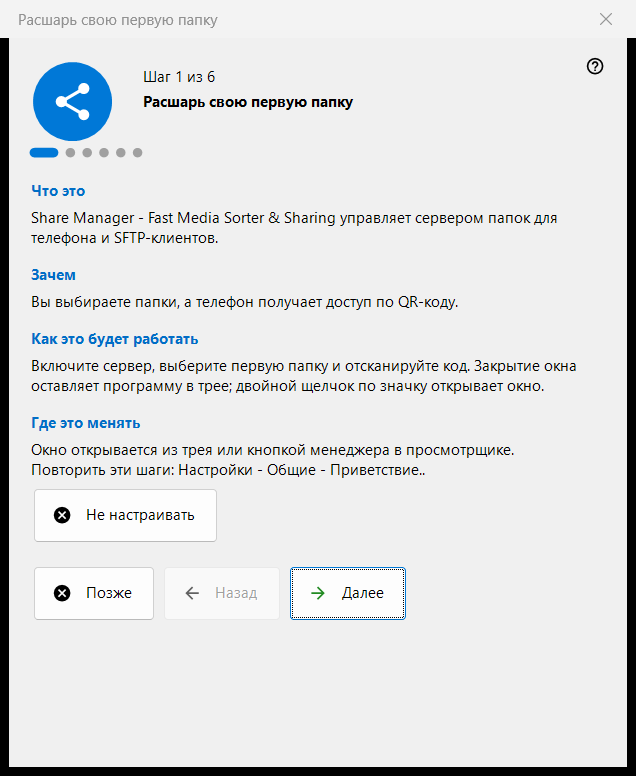
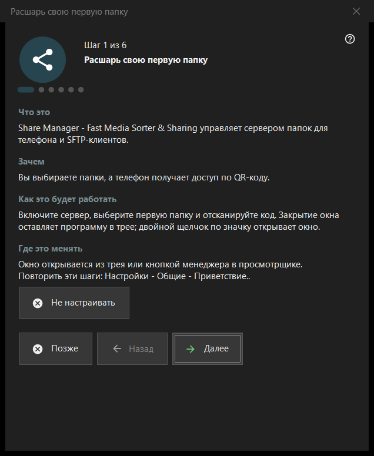

Расшарь свою первую папку
Назначение
Мастер из шести шагов: от пустого менеджера до папки, которая раздаётся на телефон. Он включает сервер, помогает выбрать первую папку, задать порт и основные параметры и заканчивается проверкой состояния. Мастер открывается при первом запуске Share Manager и его можно повторить из настроек.


Порядок действий
- Прочитайте вступление и нажмите «Далее».
- На шаге «Включить сервер» нажмите кнопку один раз и подтвердите запрос прав администратора.
- Выберите первую папку и её параметры.
- Оставьте порт или задайте свой.
- Задайте язык, запуск и режим локальной сети.
- На последней странице проверьте состояние, откройте QR-код и нажмите «Готово».
Элементы окна
Шаги и кнопки
В нижней строке написано «Шаг N из 6». «Назад» и «Далее» переходят между страницами, на последней странице «Далее» становится «Готово»; «Позже» закрывает мастер и сохраняет уже подтверждённое, «Не настраивать» закрывает его насовсем. На каждой странице четыре коротких блока: «Что это», «Зачем», «Как это будет работать» и «Где это менять».
Включить сервер
До этого шага сервер выключен. Кнопка «Включить сервер» один раз запрашивает права администратора и добавляет одно правило брандмауэра Windows для программы. Если отменить запрос, сервер остаётся выключенным, и можно попробовать снова; если сервер уже включён, страница сообщает, что дополнительный запрос прав не нужен.
Первая папка
Выберите папку, затем её имя, профиль и доступ. Кнопка «Добавить первый ресурс сейчас..» открывает мастер ресурса. Чтобы продолжить, нужна хотя бы одна папка. Параметры передаются серверу, а папки по-прежнему меняются в списке главного окна.
Порт
«Выбирает система» назначает порт один раз и больше не меняет; «Фиксированный порт:» позволяет ввести свой номер, например для проброса порта на роутере. Номер записан в каждый QR-код и файл .fmscfg, поэтому его смена делает уже выданные коды негодными. Правило брандмауэра относится к программе, а не к порту.
Основные настройки
«Язык интерфейса», «Запускать при входе в Windows», «Открывать окно менеджера при запуске» и «Только локальная сеть (без доступа из интернета)». Режим локальной сети отключает проброс порта и адрес из интернета. Автозапуск версии из Store управляется в настройках Windows.
Готово
Последняя страница проверяет сервер и выбранные папки и показывает итог; зелёный статус означает, что раздача действительно работает и папки доступны. «QR-код для телефона» открывает код, «Обновить» повторяет проверку. Если статус требует внимания, исправьте причину в главном окне или вернитесь к шагу с папкой.
Повтор мастера
Настройки - Общие - «Приветствие..» открывает меню с пунктом «Повторить настройку папок», который снова запускает этот мастер.
Настройки менеджера · Настройки общего доступа SFTP · Настройки сервера обмена